GVP LOD: Ontologies and Semantic Representation
Vladimir Alexiev, Data and Ontology Group, Ontotext Corp

CIDOC Congress, Dresden, Germany
2014-09-05: International Terminology Working Group
2014-09-09: Getty special session
2D interactive version, pdf, slideshare.
Press O for overview, H for help.
Proudly made in plain text with reveal.js, org-reveal, org-mode and emacs.
Table of Contents
Getty Vocabularies LOD
- Art and Architecture Thesaurus (AAT): released Feb 2014
- Thesaurus of Geographic Names (TGN): released Aug 2014
Work continues with:
- Unified List of Artist Names (ULAN)
- Cultural Object Names Authority (CONA)
- Getty Museum data
- AATA bibliography
Museum and CONA are more complex, involves LIDO/CDWA-lite XML to CIDOC CRM (RDF)
Cultural Heritage LOD
Working at the center. (Shows thesauri only, not yet CONA/Museum data)
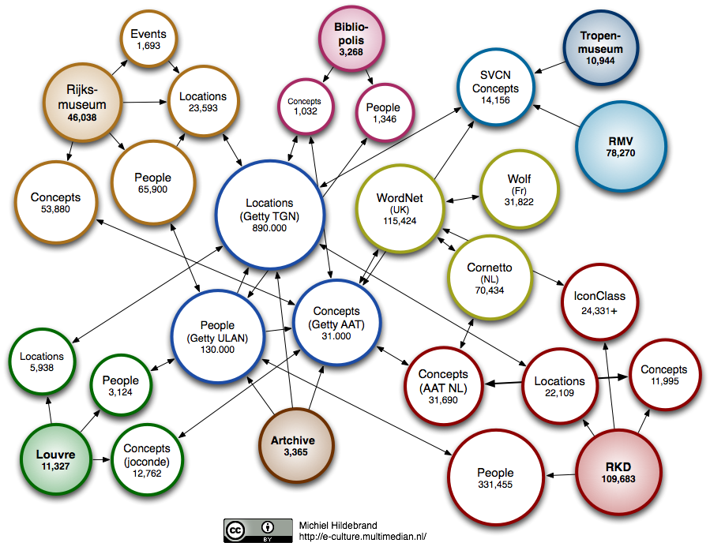Ontotext Scope of Work
- Semantic/ontology development: http://vocab.getty.edu/ontology
- Contributed to ISO 25964 ontology (latest standard on thesauri). Provided implementation experience, suggestions and fixes
- Complete mapping specification
- Help implement R2RML scripts working off Getty's Oracle database, contribution to Perl implementation (RDB2RDF), R2RML extension (rrx:languageColumn)
- Work with a wide External Reviewers group (people from OCLC, Europeana, ISO 25964 working group, etc)
- GraphDB (OWLIM) semantic repository. Enterprise Edition (clustered for high-availability)
- Semantic application development (customized Forest user interface) and tech consulting
- SPARQL 1.1 compliant endpoint: http://vocab.getty.edu/sparql
- Comprehensive documentation (100 pages): http://vocab.getty.edu/doc
- Lots of sample queries, including charts, geographic queries, etc
- Per-entity export files, explicit/total data dumps. Many formats: RDF, Turtle, NTriples, JSON, JSON-LD (upcoming)
- Help desk / support
- Presentations, scientific papers
GVP LOD Architecture
Quite straightforward

Semantic Resolution & Content Negotiation
All GVP, AAT and TGN URLs resolve, returning human or machine readable content through content negotiation (303 redirect). Eg about the ontology:
| http://vocab.getty.edu/ontology | semantic URI, content-negotiated |
| http://vocab.getty.edu/ontology.html | HTML page (application/xhtml+xml). |
| http://vocab.getty.edu/ontology.rdf | application/rdf+xml |
| http://vocab.getty.edu/ontology.ttl | text/turtle |
Eg about an AAT subject
| http://vocab.getty.edu/aat/300011154 | semantic URI, content-negotiated |
| http://vocab.getty.edu/aat/300011154.html | Forest HTML page (application/xhtml+xml). |
| http://vocab.getty.edu/aat/300011154.rdf | application/rdf+xml |
| http://vocab.getty.edu/aat/300011154.ttl | text/turtle |
| http://vocab.getty.edu/aat/300011154.nt | NTriples |
| http://vocab.getty.edu/aat/300011154.json | JSON (to change to .rj) |
| http://vocab.getty.edu/aat/300011154.jsonld | JSON-LD (upcoming) |
GVP Vocabulary Data
Scope includes:
- Subjects: Concepts but also non-concepts
- Terms as plain (SKOS) and rich (SKOS-XL) labels. Term characteristics
- Hierarchical relations: custom & standard, distinguish BTG,BTP,BTI
- Associative Relations
- Historic info on rels (rdf:Statement) and terms
- Obsolete subjects
- Alignment (exactMatch to LCSH)
- Sources (bibo:Document, bibo:DocumentPart with locator)
- Contributors (foaf:Agent)
- Revision history (prov:Activity)
- Thesaurus-specific data (for now: TGN place types, coordinates
Richer than any other SKOS thesaurus I've seen
AAT Relational Schema

AAT Conceptual Diagram
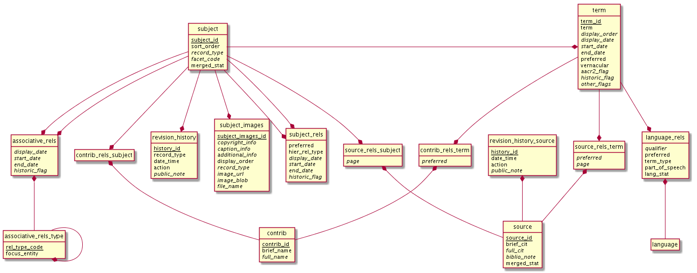External Ontologies
| Prefix | Ontology | Used for |
| bibo: | Bibliography Ontology | Sources |
| dc: | Dublin Core Elements | common |
| dct: | Dublin Core Terms | common |
| foaf: | Friend of a Friend ontology | Contributors |
| iso: | ISO 25946 (latest on thesauri) | iso:ThesaurusArray, BTG/BTP/BTI |
| owl: | Web Ontology Language | Basic RDF representation |
| prov: | Provenance Ontology | Revision history |
| rdf: | Resource Description Framework | Basic RDF representation |
| rdfs: | RDF Schema | Basic RDF representation |
| schema: | Schema.org | common, geo (TGN) |
| skos: | Simple Knowledge Organization System | Basis vocabulary representation |
| skosxl: | SKOS Extension for Labels | Rich labels |
| wgs: | W3C World Geodetic Survey geo | Geo (TGN) |
| xsd: | XML Schema Datatypes | Basic RDF representation |
Auxiliary Ontologies
| Prefix | Ontology | Used for |
| luc: | OWLIM's built-in Lucene | Full Text index & queries |
| ontogeo: | OWLIM geo-spatial extensions | Geo-spatial index & queries |
| ptop: | Ontotext PROTON top-level ontology | Inferencing (Extended Property Constructs) |
| rr: | Relational to RDF Mapping Language | Conversion Oracle->RDF |
| rrx: | R2RML extension | rrx:languageColumn |
Descriptive Info Ontologies
| Prefix | Ontology | Used for |
| adms: | Asset Description Metadata Schema | Dataset description |
| cc: | Creative Commons Rights Expression Language | License rights |
| dcat: | Data Catalog Vocabulary | Dataset description |
| dctype: | DCMI Type Vocabulary | Dataset class |
| fmt: | RDF formats used in datasets | Formats of data dumps |
| sd: | SPARQL Service Description | SPARQL endpoint capabilities (future) |
| vaem: | Vocabulary for Attaching Essential Metadata | Not used yet |
| vann: | Vocabulary for annotating vocabulary descriptions | Namespace and prefix |
| vcard: | vCard (contact info) | Contact info |
| vdpp: | Vocabulary for Dataset Publication Projects | Not used yet |
| voaf: | Vocabulary of a Friend | Linked Open Vocabularies (LOV) registration |
| voag: | Vocabulary Of Attribution and Governance | Frequency of publication |
| void: | Vocabulary of Interlinked Datasets | Basis dataset descr, LOD registration |
| wdrs: | Protocol for Web Description Resources | Described by from dataset to doc |
| wv: | A vocabulary for waivers of rights | License rights |
GVP Semantic Representation
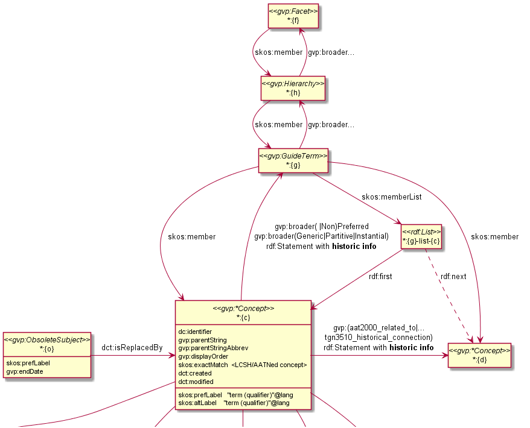GVP Semantic Representation (2)
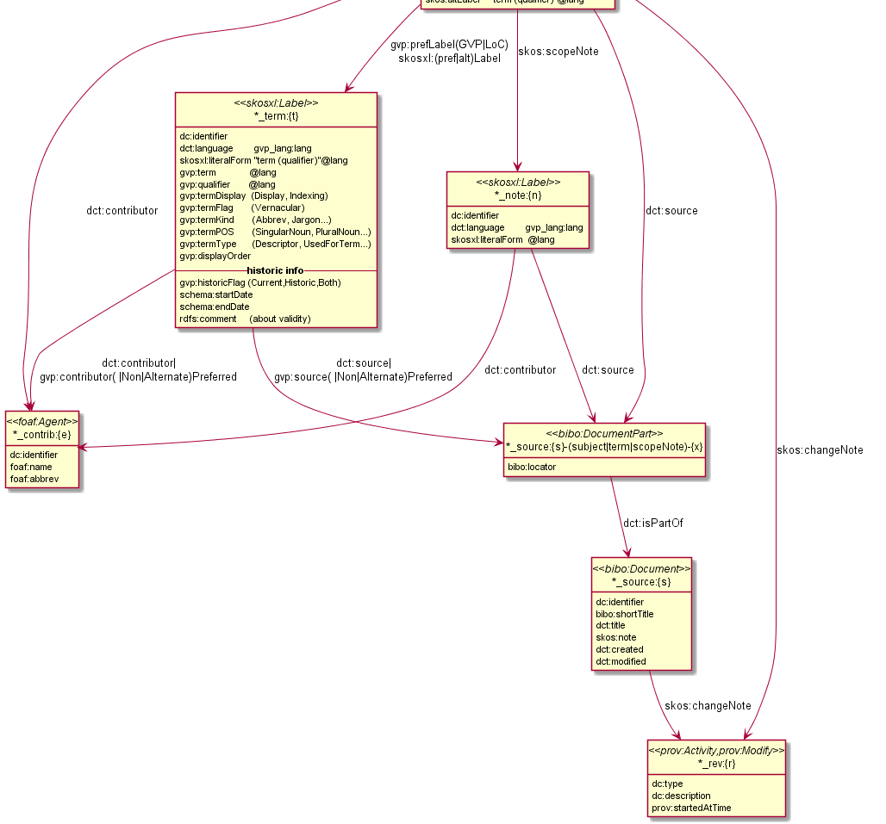GVP Subject Classes
- GVP Subjects include both Concepts and non-concepts (for organizing the hierarchy, not for indexing)
We handle "impedance mismatch" with
- SKOS: restrict skos:related, infer skos:broader
- ISO: infer iso:broaderGeneric/Partitive/Instantial
S=Standard, G=GVP common, A=AAT, T=TGN 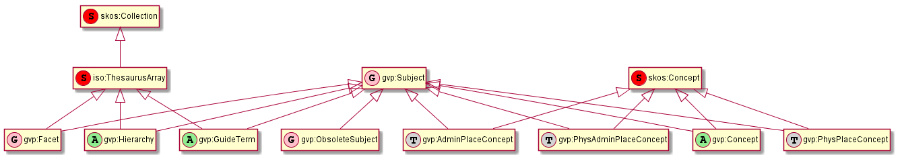
Obsolete Subjects
- AAT obsolete subjects are 4.4% of valid subjects, which shows a good rate of editorial actions
- Obsolete subjects may have been used in client data. In order not to leave such data hanging, we publish minimal information:
aat:300123456 a gvp:ObsoleteSubject; # Was made non-publishable skos:prefLabel "Made up subject"; skos:inScheme aat: ; schema:endDate "2012-12-31T12:34:56"^^xsd:dateTime. aat:300386746 a gvp:ObsoleteSubject; # Was merged to a dominant Subject skos:prefLabel "Buncheong"; skos:inScheme aat: ; dct:isReplacedBy aat:300018699; # Punch'ong schema:endDate "2012-12-31T12:34:56"^^xsd:dateTime.
Hierarchical Relations
Use iso:ThesaurusArray to allow Guide Terms below Concepts. Infer cross-threading SKOS/ISO broader relations
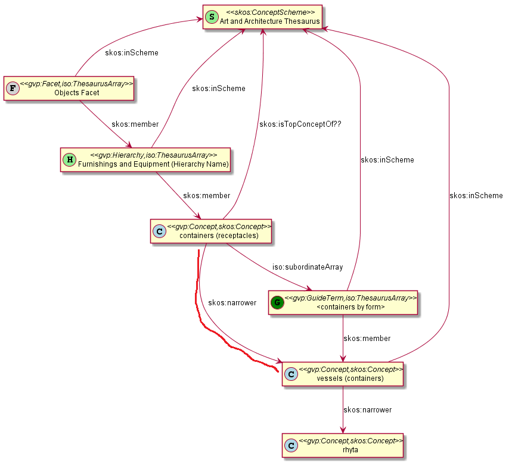Key Values (Flags) Are Important
Excel-driven Ontology Generation™ (getty-codes.xls to getty-codes.ttl)
Key val can be mapped to Custom sub-class, Custom (sub-)prop, Ontology Value (eg <term/kind/Abbreviation>)

Associative Relations Are Valuable
More Excel-driven Ontology Generation™ (assoc-rels.xls to assoc-rels.ttl)
- Relations come in owl:inverseOf pairs (or owl:SymmetricProperty self-inverse)
- Shoudl we make a subproperty hierarchy?
GVP Ontology Documentation
http://vocab.getty.edu/ontology, LOV Entry (10 classes, 177 props) 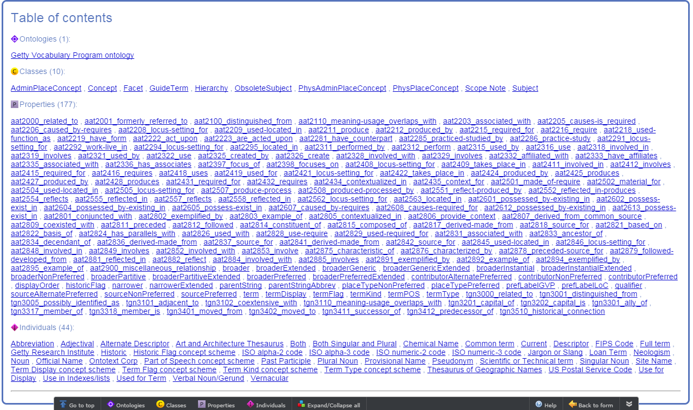
GVP Ontology: a Class
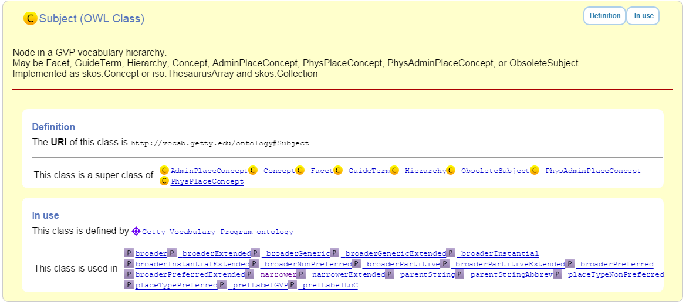ISO 25946: Latest Standard on Thesauri
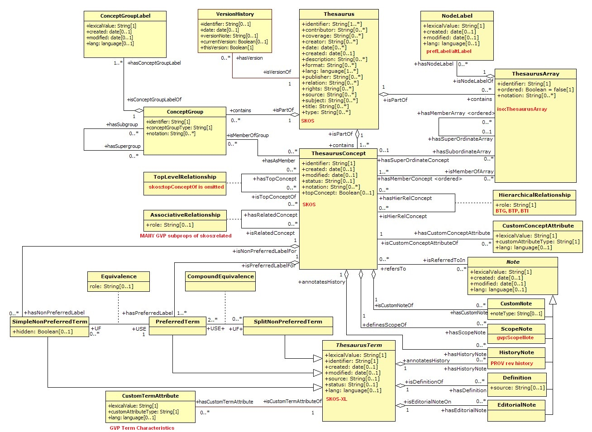Use of iso:ThesaurusArray in GVP
Use for ordered children. Novelty: if parent is Concept, use anonymous array. Careful crafting of URLs to make rdf:List 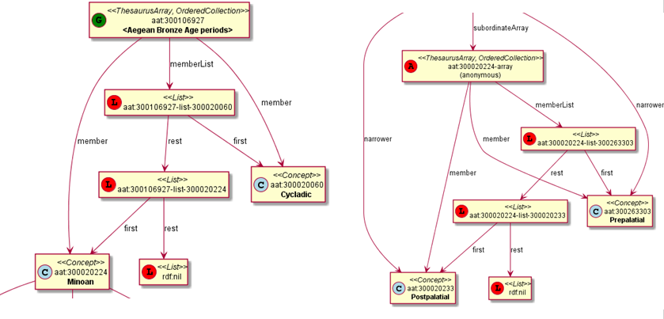
Contribution to ISO 25946
- Contributed to ISO 25946 ontology (LOV entry)
- First industrial use of ISO 25946
- Defined appropriate combinations of BTG, BTP, BTI relations (first formally defined in ISO).
On Compositionality of ISO 25964 Hierarchical Relations (BTG, BTP, BTI), V.Alexiev, J.Lindenthal, A.Isaac. Draft paper, Presentation at NKOS 2014 Workshop at DL 2014, London, 12 Sep 2014
| BTGx | BTPx | BTIx | |
| BTGx | BTGE: numerous examples | BTPE: beak irons BTG anvil components BTP <anvils and anvil accessories> | no |
| BTPx | BTPE: anvil components BTP <anvils and anvil accessories> BTG <forging and metal-shaping tools> | BTPE: Sofia BTP Bulgaria BTP Europe | no: Sofia BTP Bulgaria BTI country, but Sofia is no country |
| BTIx | BTIE: Mt Athos BTI orthodox religious center BTG Christian religious center | no | no |
Terms
Support multilingual labels: both SKOS (plain)…
aat:300198841 a skos:Concept , gvp:Subject , gvp:Concept ; skos:prefLabel "rhyta"@el-latn , "rhyta"@en , "rhytons"@es , "rhytons"@fr , "rytons"@nl ; skos:altLabel "rhyta"@es , "rhyton"@es , "rhyton"@en , "rhyton"@el-latn ...; skosxl:prefLabel aat_term:1000198841-en , aat_term:1000198841-el-Latn ...; skosxl:altLabel aat_term:1000198841-es , aat_term:1000297235-en ...
… and rich info in SKOS-XL:
aat_term:1000198841-en a skosxl:Label ; dc:identifier "1000198841" ; dct:language aat:300388277 , gvp_lang:en ; # owl:sameAs dct:contributor aat_contrib:10000000 , aat_contrib:10000131 , aat_contrib:10000088 ; skosxl:literalForm "rhyta"@en ; #### with Qualifier if applicable gvp:term "rhyta"@en ; #### no qualifier gvp:displayOrder "1"^^xsd:positiveInteger ; gvp:termType <http://vocab.getty.edu/aat/term/type/Descriptor> ; #### Descr/AltDescr/UseFor gvp:termPOS <http://vocab.getty.edu/aat/term/POS/PluralNoun> ; #### Part of Speech gvp:contributorPreferred aat_contrib:10000000 , aat_contrib:10000088 ; gvp:contributorNonPreferred aat_contrib:10000131 ; gvp:sourcePreferred aat_source:2000024811 , aat_source:2000051089-term-1000198841...; dct:source aat_source:2000024811 , aat_source:2000052946 , aat_source:2000049728...; gvp:sourceNonPreferred aat_source:2000052946 ; gvp:sourceAlternatePreferred aat_source:2000048328-term-1000198841 .
Languages
IANA Language Subtag Registry: 9000 registrations (broken down by Type and Scope):
- 7769 languages
- 227 extlangs, e.g. ar-auz (Uzbeki Arabic)
- 116 language collections, e.g. bh (Bihari languages)
- 62 macrolanguages, e.g. zh (Chinese), cr (Cree)
- 4 special languages, e.g. und (Undetermined)
- 162 scripts, eg Latn (Latin), Japn (Japanese)
- 301 regions, e.g. US (United States), 021 (Northern America)
- 61 variants
- 67 redundant
- 26 grandfathered
Custom Language Tags
Despite the richness of IANA tags, we had to define new tags, using several extension mechanisms:
- Private language, e.g.
- x-byzantin-Latn: Byzantine Greek (transliterated)
- x-khasian: Khasian
- x-frisian (IANA/ISO has codes for predecessor Old Frisian and dialects West, Saterland and North Frisian)
- Private language used in specific region, e.g.
- qqq-002: African language (not specified which)
- qqq-142: Asian language (not specified which)
- qqq-ET: Ethiopian (not specified which: Boro/Borna, Karo, Male…)
- Private modifier, e.g.
- grc-Latn- x-liturgic: Liturgical Greek
- ber-Latn- x-dialect: Berber Dialects (transliterated)
- fa-Latn- x-middle: Persian, Middle (transliterated)
- zh-Latn-pinyin- x-notone: Chinese (transliterated Pinyin without tones)
Future: publish lang tags (we now publish only ISO2 & ISO3 codes)
Sources
bibo:Document or bibo:DocumentPart
aat_source:2000051089 a bibo:Document; dc:identifier "2000051089" bibo:shortTitle "AATA database (2002-)"; dct:title "Getty Conservation Institute (GCI). database of AATA Online... 2002-. ". aat_source:2000051089-term-1000198841 a bibo:DocumentPart; dct:isPartOf aat_source:2000051089; bibo:locator "128257 checked 26 January 2012".
Applied to subject, term, scopeNote:
aat:300198841 # subject (rhyta) dct:source aat_source:2000030301-subject-300198841; dct:source aat_source:2000052378. aat_term:1000198841-en # term "rhyta"@en gvp:sourceNonPreferred aat_source:2000049728; dct:source aat_source:2000051089-term-1000198841. aat_scopeNote:34904 # scopeNote dct:source aat_source:2000046502.
Contributors
foaf:Agent
aat_contrib:10000131 a foaf:Agent; dc:identifier "10000131"; foaf:nick "CDBP-DIBAM"; foaf:name "Centro de Documentación de Bienes Patrimoniales...".
Applied to subject, term, scopeNote:
aat:300198841 # subject "rhyta" dct:contributor aat_contrib:10000131; dct:contributor aat_contrib:10000000. aat_term:1000198841-en # term "rhyta"@en gvp:contributorNonPreferred aat_contrib:10000131; gvp:contributorPreferred aat_contrib:10000000. aat_scopeNote:34904 # scopeNote dct:contributor aat_contrib:10000000.
Historic Info
Includes dates of applicability, historicFlag, comment. Applied to terms; relations, place types (using rdf:Statement)
aat_term:1000002693-en a skosxl:Label; skosxl:literalForm "lambruscatura"@en ; gvp:historicFlag <http://vocab.getty.edu/historic/historic> ; schema:startDate "0900"^^xsd:gYear ; schema:endDate "1700"^^xsd:gYear ; rdfs:comment "Medieval term for wainscoting". aat_rel:300020271-aat2812_followed-300020269 a rdf:Statement; rdf:subject aat:300020271; # Second Dynasty (Egyptian) rdf:predicate gvp:aat2812_followed; rdf:object aat:300020269; # First Dynasty (Egyptian) rdfs:comment "Second Dynasty began ca. 2775 BCE"; schema:startDate "-2785"^^xsd:gYear; schema:endDate "-2765"^^xsd:gYear. tgn:7011179-placeType-300008347 a rdf:Statement; rdf:subject tgn:7011179; # Siena rdf:predicate gvp:placeTypePreferred; rdf:object aat:300008347; # inhabited place rdfs:comment "settled by Etruscans (flourished 6th century BCE)"; schema:startDate "-0800"^^xsd:gYear; gvp:displayOrder "1"^^xsd:positiveInteger.
Provenance Ontology
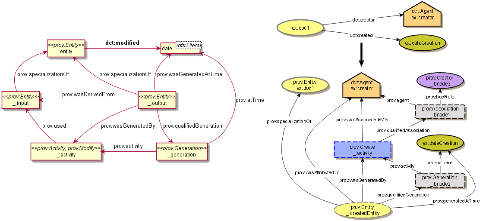 PROV considers that prov:Modify uses an unknown old entity "_:input" and generates an unknown new entity "_:output", both being specializations of the entity under consideration. Need to use prov:Generation so we can use prov:atTime and reflect that the modification is a prov:InstantaneousEvent.
Revision History
PROV is too complex, so we simplify:
aat:300018699 skos:changeNote aat_rev:12345, aat_rev:12346, aat_rev:12347; prov:wasGeneratedBy aat_rev:12345; dct:created "2014-01-02T01:02:03"^^xsd:dateTime; dct:modified "2014-01-03T01:02:03"^^xsd:dateTime; dct:issued "2014-01-04T01:02:03"^^xsd:dateTime. aat_rev:12345 a prov:Activity, prov:Create; dc:type "created"; prov:startedAtTime "2014-01-02T01:02:03"^^xsd:dateTime. aat_rev:12346 a prov:Activity, prov:Modify; prov:used aat:300018699; dc:type "term added"; dc:description "leggings, puttee (1000248060)"; prov:startedAtTime "2014-01-03T01:02:03"^^xsd:dateTime. aat_rev:12347 a prov:Activity, prov:Publish; prov:used aat:300018699; dc:type "issued"; prov:startedAtTime "2014-01-04T01:02:03"^^xsd:dateTime.
TGN Specifics: Concept-Place Duality
Duality between Concept and its denotation (ala VIAF, UK BL, FR BnF, SE KB…) 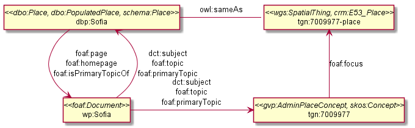
TGN Semantic Representation
Adds place types (TGN->AAT), Concept-Place duality, coordinates

Inference
Hierarchical Relations (GVP->Standard) inference: blue=standard, black=GVP, bold=closure, red=restriction 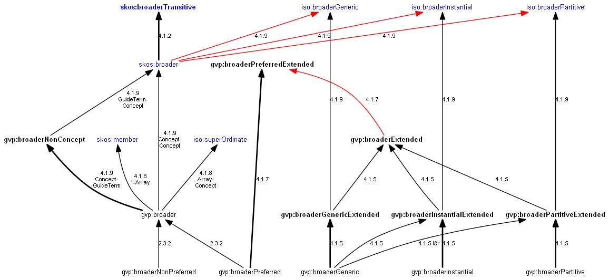
Extended Property Constructs
- TGN is much bigger: AAT: 10M, TGN: 94M (explicit statements)
- We infer 60M statements (1.58x expansion ratio)
- To do this quickly (on biweekly refresh), we decided to use OWLIM Rules
- While OWL2 has very powerful class constructs, its property constructs are quite weak
- Extending OWL2 Property Constructs: several extensions that we found useful
pN = premises, r = restriction (just another premise), tN = types, q = conclusion
p1 / p2: property chain (more efficient than owl:propertyChainAxiom and owl:TransitiveProperty)p & r: property conjunction (restriction): holds between two nodes when both properties connect the same nodes[t1] p [t2]: type restriction: holds when source has type t1 and target has type t2 (shown inside the node)
Extended Property Constructs (2)
| name | prop path | construct | illustration |
| PropChain | q <= p1 / p2 | Chain of fixed length 2 |  |
| PropRestr | q <= p & r | Conjunction (restriction by property) |  |
| PropChainRestr | q <= (p1 / p2) & r | Chain and restriction by property | 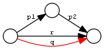 |
| TypeRestr | q <= [t1] p [t2] | Restriction by two typechecks |  |
| PropChainType2 | q <= p1 / p2[t2] | Chain and typecheck | 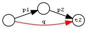 |
Reduced SKOS Inference
Eliminate redundant props (World has 1.2M narrowerTransitive, 2.4M semanticRelation). Break inference at red ovals
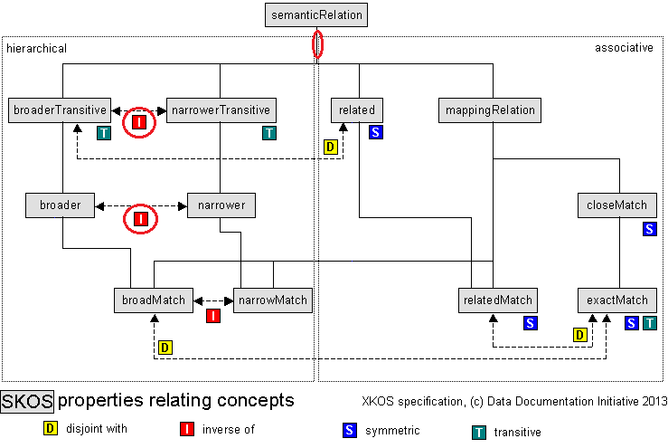Construct Query: Get & Cache All Data for Subject
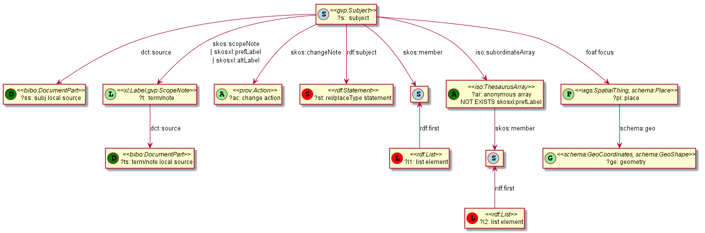 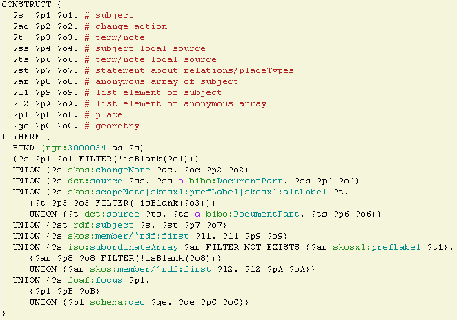Semantic Resources, Dumps
- All data for every independent resource (Subject, Source, Contributor) is extracted
- Using CONSTRUCT queries like above (the ones for Source, Contributor are much simpler)
- Entity files are cached, thus served very quickly
- Entity files are served in RDF/XML, N3/Turtle, NTriples, JSON, soon JSON-LD
- explicit.zip: R2RML-generated statements, NTriples (you need to do the Inferencing)
- full.zip: all statements, concatenated from entity files, NTriples
Documentation
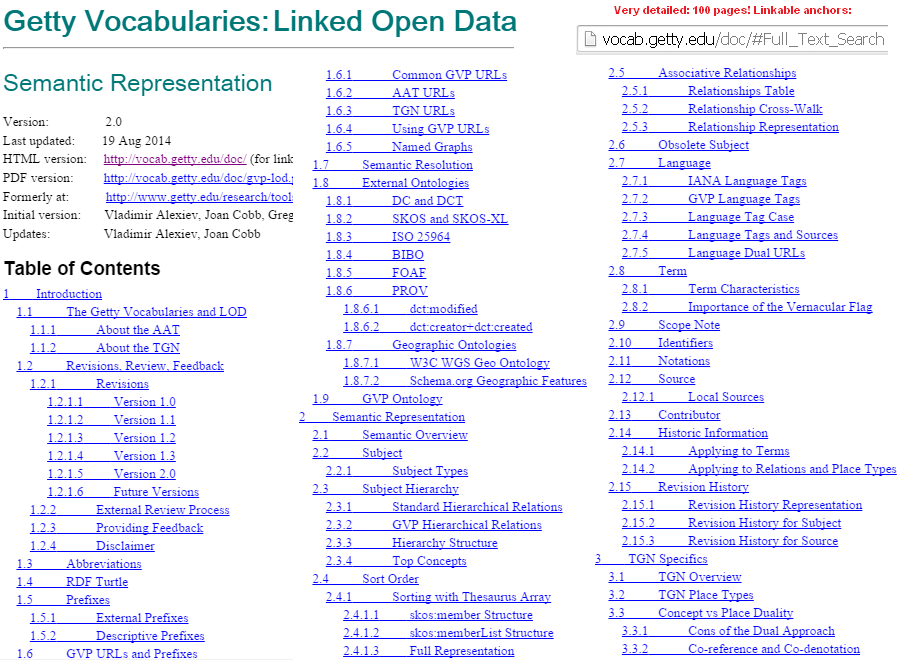Doc Production
Edit in Word. Spellcheck, link check (below). Print as PDF. Save as Compact HTML, HtmlTidy, rewrite with original images.
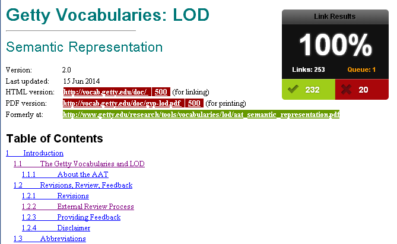 Benefit: printable PDF and linkable HTML
Sample Queries
Lots of them! The (!) says "read the documentation first". As part of helpdesk support, we're tracking usage and adding samples. 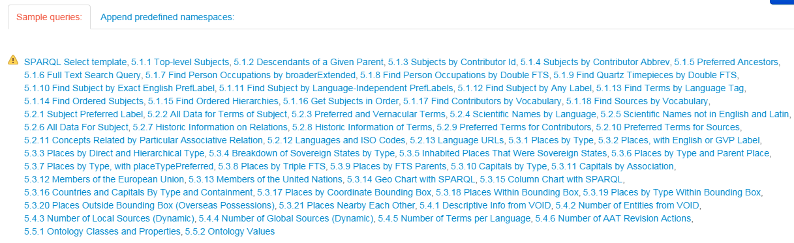
Sample Query: Bar chart with SPARQL
Number of members of the UN per year. See doc or jsfiddle with it
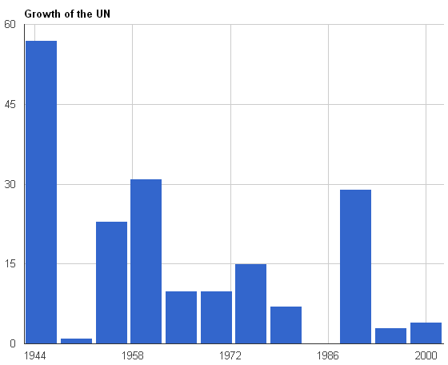Sample Query: Geo chart with SPARQL
When each nation joined the UN. See doc or jsfiddle with it.
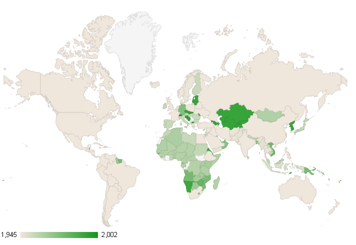Sample query: Overseas Possessions of the Netherlands
# 5.3.20 Places Outside Bounding Box (Overseas Possessions)
select ?place ?name ?lat ?long {
?place skos:inScheme tgn: ;
foaf:focus [wgs:lat ?lat; wgs:long ?long];
gvp:prefLabelGVP [xl:literalForm ?name];
gvp:broaderPartitiveExtended [rdfs:label "The Netherlands"@en]
filter (!(50.787185 <= ?lat && ?lat <= 53.542265 && 3.389722 <= ?long && ?long <= 7.169019))}

GVP LOD Usage
People started using AAT and TGN right after their release
- AAT Concept selection (usually by autocompletion): EADitor, xEAC, VRA Editor, MODES, DIGIMUS, Drupal Web Taxonomy
- TGN Place selection: same as above; Portable Antiquities (finds.org.uk), Nomisma, Kerameikos
- Visualization: Hierarchies with d3js, LOD with lodlive.it
- Semantic enrichment: Europeana (Rijksmuseum, Museo Galileo, Erfgoedplus.be), Partage Plus (Art Nouveau to Europeana)
| Vocab | Actual | Potential |
| AAT | 9 | 6 |
| TGN | 3 | |
| ULAN | 1 |
Usage Stories
Usage Stories (internal confluence) 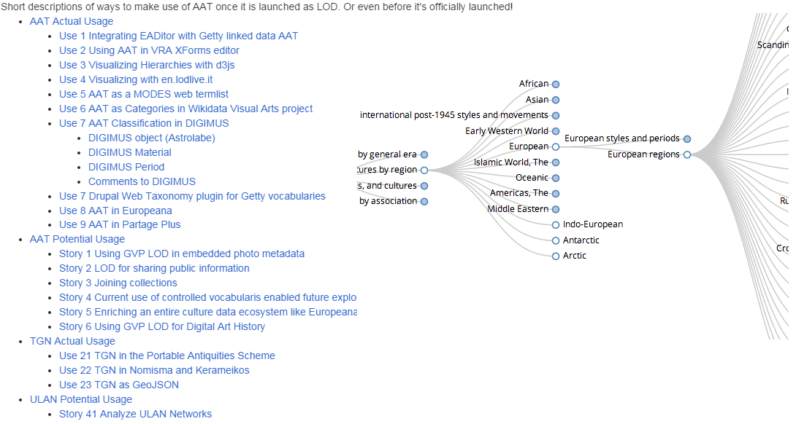
Thanks for your time!
mailto:vladimir.alexiev@ontotext.com